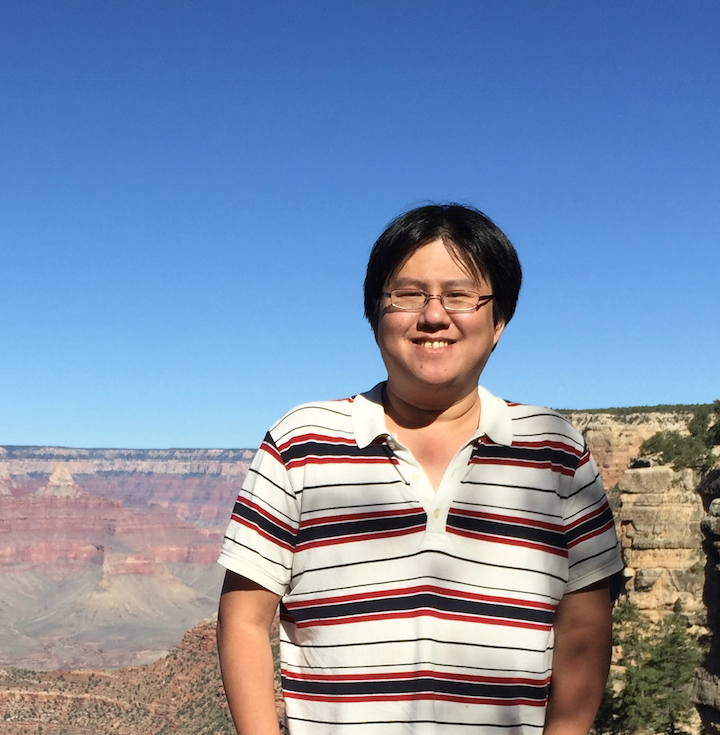

Kevin Hsieh
I have completed my Ph.D study in the department of Electrical and Computer Engineering at Carnegie Mellon University, where I worked with Professor Phillip B. Gibbons and Professor Onur Mutlu. I am interested in research problems that lie at the intersection of Machine Learning, Distributed System, and Computer Architecture. My current research focus is on high-performance machine learning systems on massive and highly distributed real-world data.
Before the Ph.D program, I was an engineering manager in Mediatek, Taiwan, where I worked on processor/system architecture and system performance optimization on mobile SoCs.
Publications